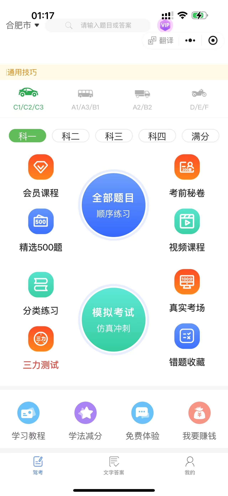
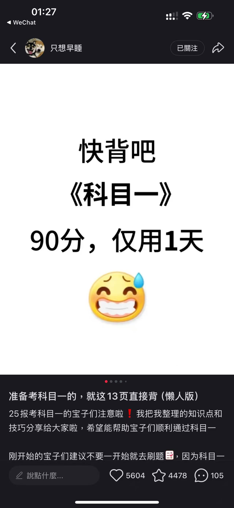
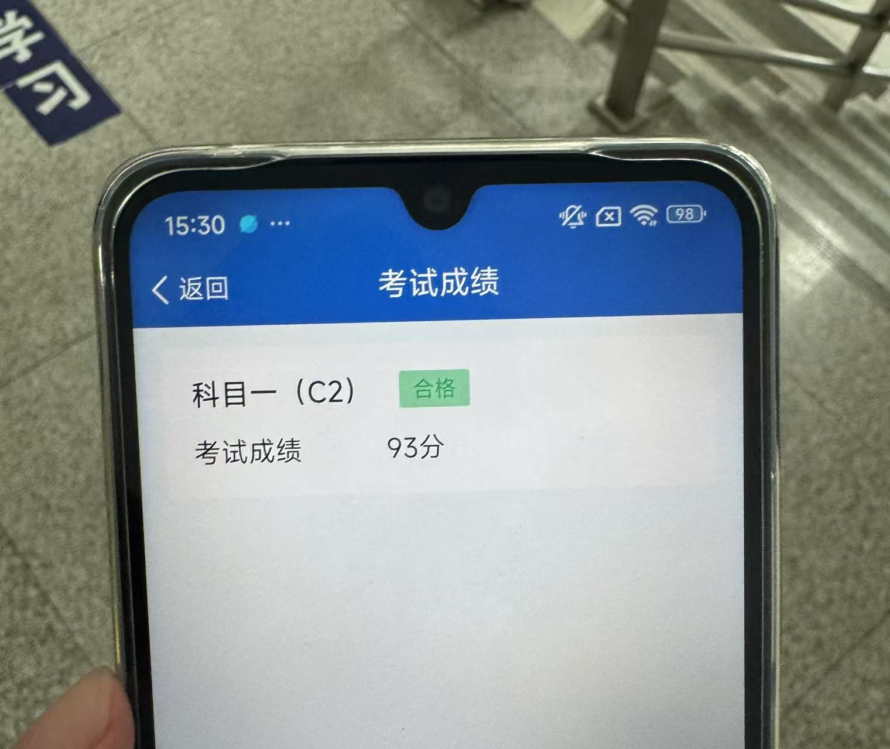

我的科目一考试体验

〇、前情提要
学车的原因：我妈觉得我爸不会开车一辈子受她欺负，不想让我像我爸一样受欺负
学车的导火索：在科大南边的路上遇到了一个法国的美女，她说她正要去报驾校，我顺便跟她一起去了
学车的前期准备：因为我的Apple ID是Apple Store美区的，无法下载“交管12123”软件，所以在淘宝上购入了一个Redmi 14C手机，4GB+128GB在国补的帮助下才花488.75，也是刷新了我对手机的认知……当然这部手机在后来对我帮助很大。
一、皖美学车打学时
本人在安徽报考，打学时使用的是“皖美学车”这个软件。我开始使用我的主力机进行打学时，但是在打学时的过程中就耽误了我听音乐等使用手机的时候。但是我突然意识到我的刚买的手机正好可以帮我打学时，然后我就开启了一边干自己的事情，一边看备用机上什么时候需要刷脸就刷脸的打学时历程。
二、约考阶段
打完了学时跟教练说约考（教练开始差点忘了我是谁了），约到了我从北京出差隔一天的下午（2025年7月10日），当时是想着科目一也不需要太多精力，火车上看看得了，后来发现我太naive了。
三、备考阶段
在打完学时的时候，我在闲鱼上搞了一个8.88的快通驾考小程序账号。但是截至2025年7月8日我几乎一点没看。
然后当我开始看的时候理想很丰满，我开始直接选择了小程序里的全部题目，然后一道一道练+做笔记，还特意建了一个Github的Repo，最后发现这种复习效率实在是太低了，这导致了我7月8日晚上以及7月9日整天几乎白干。直到后来半夜了我看小红书才知道应该做精选500题，然后就熬了大夜以及早起把这500题做了一遍。

当然，我的正确率惨不忍睹，我一直在想这波肯定挂科了，已经做好补考的准备了。我妈也劝我要不这次不去了，下次再约。后来我想报都报了，不如去熟悉熟悉考试环境，然后准备下午就去了。
当然，我也没有完全放弃希望，还是渴望奇迹的发生，我在小红书上找到了这种必背知识点总结，然后自己用Typora记录一遍，我会把这个笔记po到后边章节。

四、考试阶段
没做模拟考试，心里一点底都没有……从家到考场一路上翻看我的小笔记，进入考场之后等待期间也在看，然后考试期间就是紧张地心提到了嗓子眼。
题目右边是答题卡，10行10列，也就是每行错一个的话刚好及格，我记得前面几行都是只错一个，然后后来就有了几行全对，增加了我的容错率，倒数第二行我好像打错了两个，但是已经不影响结果了。随后93分飘过~
五、真心的话
实际上考试的题比软件里的题简单的多，可能难题就是一小部分。但是也不希望看官们像我一样有效学习时间不到一天就去考试。Anyway，反正已经过了，在此记录下我的科目一考试体验。

附件：我的笔记
（我反正几乎只看这个就过了）
-
假一吊二撤三醉五逃终生（x年内不得报考）
-
城市35，公路47（限速，无有中心线）
-
能见度261、145、52离（能见度200m 60km/h 距离100m）
-
漫水路：一停二看三低速通过
-
口五站三（50m、30m，其余150m）
-
高速
- 两条车道（100-120，60-100）
- 三条（110-120，90-110.60-90）
-
左边超车，右边停，提前开转向灯
- 停车距离路边30cm
-
学法减分：
- 公益：1h-1次-1分
- 现场：1h-1次-2分
- 往上：3日内-30min-1次-1分
-
驾驶证6、10、长
-
车登记，人核发
-
大客中客牵引车不可初次申领
-
驾驶证、行驶证、保险、检验合格、号牌
-
特殊路段30km/h
-
警告标志：
- 高速公路150m
- 普通50-100m
- 先开警告灯，再放标识，人转移
-
红灯：右转弯不妨碍可以同行
-
黄灯：越过线的可以继续
-
警示灯：注意瞭望
-
绿灯：转弯车辆不得妨碍直行、行人通过
-
3年以下：重伤、死亡、财产重大损失
-
3-7：死亡且逃逸、逃逸或其他恶劣情节
-
7年以上：逃逸致人死亡
-
号牌扣分：
- 没按照规定安装：3
- 没挂/遮挡、污损：9
- 伪造、变造：12
-
（离合），刹车/制动、油门/加速
-
大中型客车：60岁->63岁
-
三轮车、二轮车：18-70岁
-
C1/C2：18岁以上
-
C3（低速载货）：18-63岁
-
C6（轻型牵引）：20-70岁
-
B1（中客）/B2（大货）：20-63岁
-
A1（大客）/A2（重挂）：22-63岁
-
醉驾：>80mg/100ml
-
酒驾：>20mg/100ml
-
酒驾处罚：
- 酒驾：扣证6月，罚1-2k
- 再次酒驾：吊销，罚1-2k，拘留10日以下
- 营运车：吊销，罚5k，拘留15日以下，五年内不得申请
-
醉驾处罚：
- 醉驾：吊销，刑事责任，五年内
- 醉驾营运车：吊销，刑事责任，10年内，重新后也没法营运车
- 饮酒后犯罪：吊销，刑事责任，终身
-
罚款20-200：
- 实习期单独上高速、没实习标志
- 补还后用原驾驶证
- 30天内未申报变更
- 小事故应该撤未撤：罚200
-
罚200-500：
- 未审检，仍驾车
- 身体条件
- 隐瞒、欺骗补领证
- 公路客运超员未到20%
-
罚20-200+15天以下拘留
- 无证驾驶
- 肇事逃逸，不犯罪
- 强迫驾驶人事故，不犯罪
- 违反不听劝阻
- 损毁交通设施，不犯罪
- 非法拦截扣留车辆，堵塞财产损失
-
罚200-2000+吊销
- 改装/报废车
- 超速50%
- 把车给无证人驾驶
-
罚款200-2000+拆除
- 报警器，标志灯
-
罚款1000-2000
- 初次饮酒，扣12分，6个月驾驶证
- 再次饮酒：吊销，10日以下拘留
-
超速：普路36，高速612
- 普路超速20-50%，3分
- 普路超速50%以上：6分
- 高速超速20-50%：6分
- 高速超速50%以上：12分
-
超员：7上69，7下36
- 7座以上20-50%：6
- 7座以上50%以上：9
- 以下20-50：3
- 以下>50：6
-
货车超载：136
- 30%以下：1。30-50%：3。50%以上：6。
-
逆行：普路3，高速12
-
扣1分：
- 不系安全带
- 不按照规定年检
- 违反禁令标志，禁止标线
- 不正确会车
- 不正确用灯
- 普路不正确掉头
-
扣3分：
- 不按照规定车道行驶
- 不避让行人
- 不避让校车
- 开车接电话
- 普路逆行
- 穿插等候车辆
- 未设置警告标志
- 不按规定安装号牌
- 高速低于规定的最低时速
- 事故后错误用灯光
-
扣6分
- 违反道路信号灯
- 违法占用应急车道
- 驾驶证暂扣期间开车
- 轻微伤，财产损失逃逸
-
扣9分
- 污损、遮挡、未悬挂号牌
- 驾驶与准驾车型不符
- 高速公路/城市快速路违法停车
-
扣12分
- 伪造、变造驾驶证、号牌
- 饮酒
- 高速倒车、逆行、掉头
- 轻伤/死亡逃逸
- 卖分牟利
-
交警信号
- 直行：直臂
- 变道：捂胸
- 停止：
有点像德国某党派的敬礼 - 左右转弯：左右手向下
- 左转弯待转：扶伞
- 减速慢行：slow down